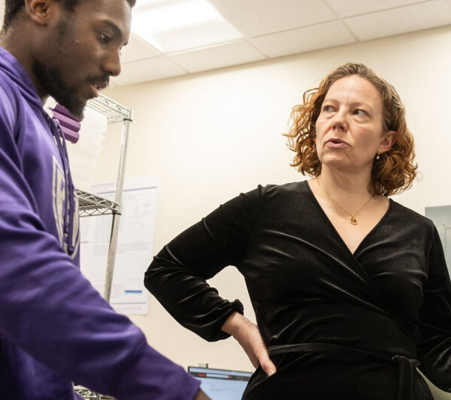

Gallery / About Capstone
Where learning comes together.
Capstones offer a space to connect ideas, ask meaningful questions, and bring a sustained project into focus.
Explore the gallery
What is a capstone?
A question worth exploring
A capstone can bring together learning through a focused question, creative investigation, or applied challenge. Replace with approved university explanatory content.
A process of discovery
Students research, develop ideas, receive feedback, and shape a final piece of work. Expectations may vary by program; no institution-specific policy is asserted here.
Work that can be shared
Work such as research, creative work, publications, or prototypes is created by students.
Follow your curiosity.
Browse across disciplines, search for an idea, or filter by department, semester, project type, and community partner involvement. Open a project to learn about its process and explore supporting material.
Return to the gallery